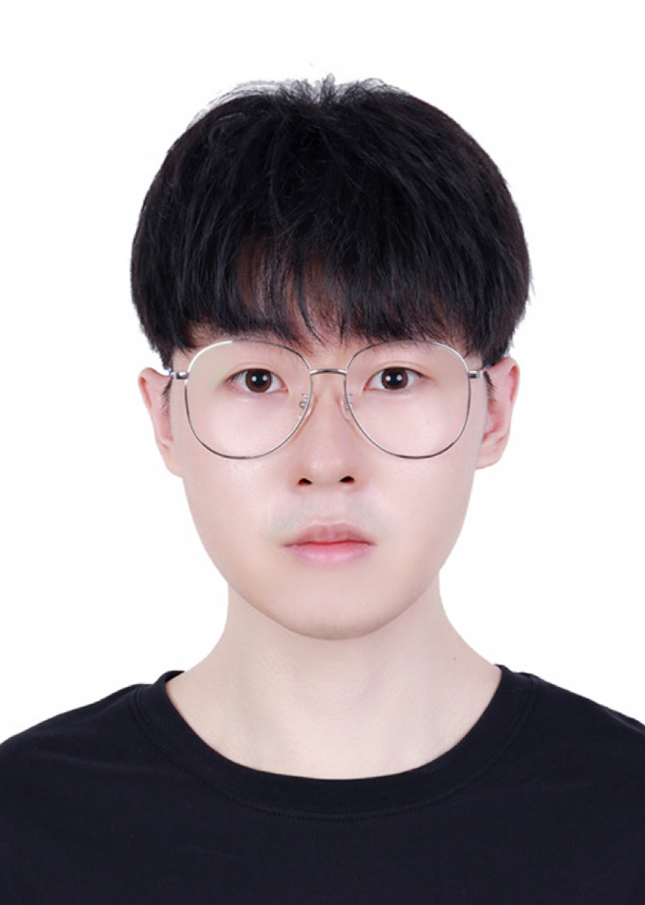

|
Shouxu Lin
|
 |
Shouxu Lin, Ph.D.
Department of Computer Science, Cornell University
Ithaca, NY, United States
Email: sl3343@cornell.edu
[Curriculem Vitae]
|
About me
I’m a PhD student at Cornell University, advised by Prof. Rachit Agarwal. My research interests broadly lie in the intersection of systems, networking, and Machine Learning. I am a recipient of Cornell University Fellowship and Carnegie Mellon University INI Outstanding Research Assistant Award. Before joing Cornell, I was a Master Student at Carnegie Mellon University, advised by Prof. Carlee Joe-Wong and Greg Ganger, and an undergraduate student at Wuhan University and Australian National University, advised by Prof. Weifa Liang.
News
|